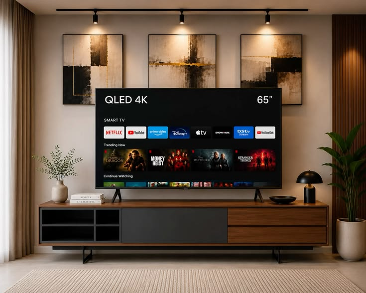
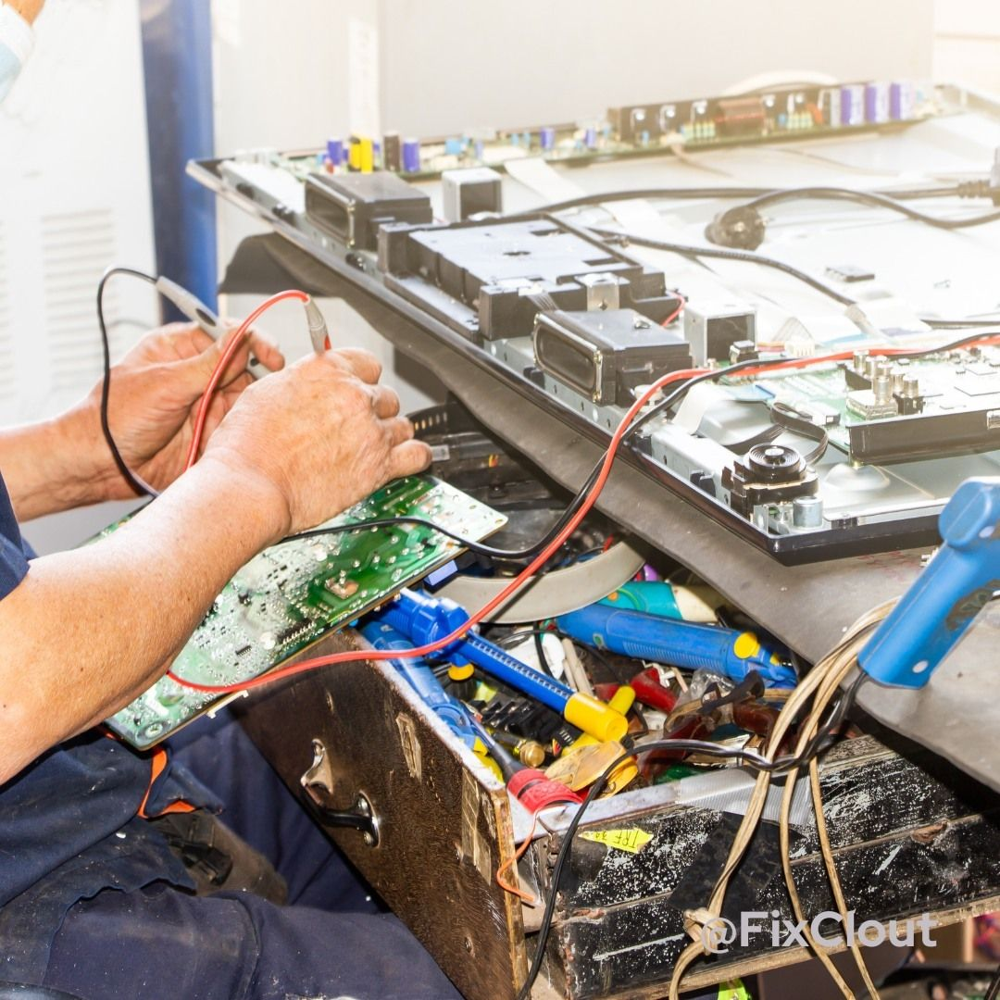
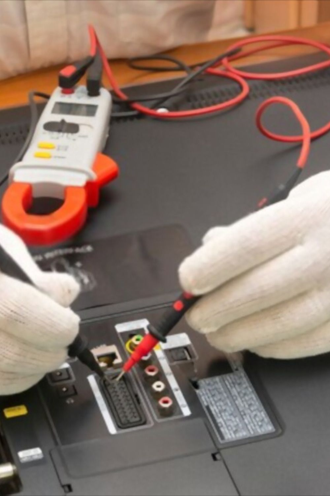
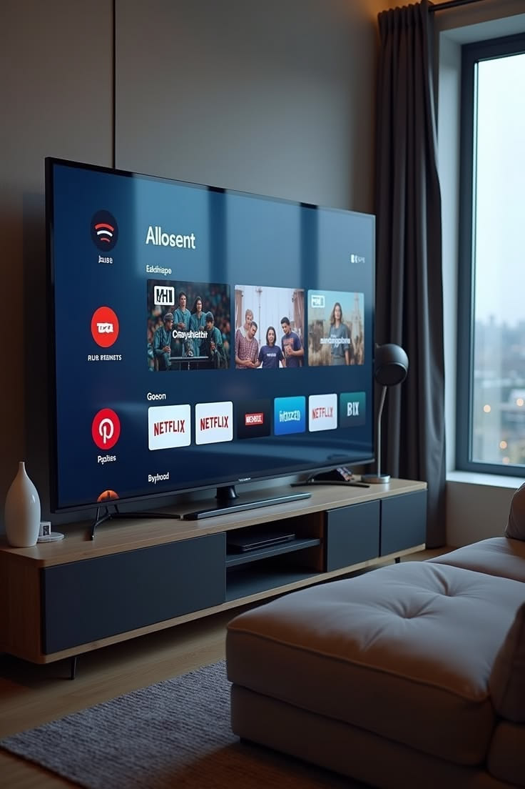

خبراء صيانة الشاشات في مصر
نحن في خبراء صيانة الشاشات نقدم خدمات صيانة احترافية لجميع أنواع الشاشات والتلفزيونات بأحدث الأجهزة والمعتمد. فريقنا من الفنيين المتخصصين بخبرة تتجاوز 15 عاماً يضمن لك إصلاح شاشتك بأعلى جودة وبأسعار منافسة.
أنواع الشاشات التي نصلحها
نحن متخصصون في صيانة وإصلاح جميع أنواع وتقنيات الشاشات الحديثة والقديمة
صيانة شاشات سمارت
صيانة شاشات سمارت TV في مصر من خبراء صيانة الشاشات. إصلاح مشاكل الواي فاي والتطبيقات وال...
اعرف المزيدصيانة شاشات OLED
صيانة متقدمة لشاشات OLED من خبراء صيانة الشاشات. متخصصون في إصلاح مشاكل الاحتراق والبيكس...
اعرف المزيدصيانة شاشات LCD
مركز خبراء صيانة الشاشات لصيانة شاشات LCD بكل أحجامها وماركاتها. إصلاح مشاكل الإنفرتر وا...
اعرف المزيدصيانة شاشات LED
خدمة صيانة شاشات LED المتخصصة من خبراء صيانة الشاشات. نقدم إصلاح جميع أعطال شاشات الليد ...
اعرف المزيدصيانة شاشات سمارت
خدمة صيانة شاشات سمارت المتخصصة من خبراء صيانة الشاشات. نقدم إصلاح جميع أعطال شاشات السمارت ...
اعرف المزيدصيانة شاشات بلازما
صيانة شاشات بلازما في مصر من خبراء صيانة الشاشات. إصلاح بوردة الواي بورد والزي سيستيم وم...
اعرف المزيدالماركات التي نتخصص فيها
نتعامل مع جميع الماركات العالمية والمحلية بقطع غيار أصلية ومعتمدة
ليه تختار خبراء صيانة الشاشات؟
أكبر مركز متخصص في صيانة الشاشات في مصر - قطع غيار أصلية، ضمان حقيقي، وفنيين بخبرة +15 سنة
ضمان يصل إلى 12 شهر
نقدم ضماناً حقيقياً يصل إلى 12 شهراً على جميع أعمال الصيانة وقطع الغيار المستبدلة.
قطع غيار أصلية 100%
نستخدم فقط قطع غيار أصلية ومعتمدة من الشركات المصنعة لضمان أعلى جودة وعمر أطول لشاشتك.
متخصصون في الشاشات فقط
تخصصنا الدقيق في صيانة الشاشات فقط يضمن لك خبرة عميقة ودقة في التشخيص والإصلاح لجميع الأعطال.
أسعار عادلة وشفافة
نقدم أسعاراً تنافسية وعادلة مع تقديم فاتورة تفصيلية بكل التكاليف قبل البدء في أي عملية صيانة.
فنيين بخبرة 15 عاماً
فريقنا من الفنيين المدربين والمعتمدين بخبرة تتجاوز 15 عاماً في صيانة جميع أنواع الشاشات.
خدمة منزلية سريعة
فنيونا يصلون إليك في نفس اليوم أينما كنت. نوفر خدمة الصيانة المنزلية في جميع المحافظات.



آراء عملائنا
اطلع على تجارب عملائنا الحقيقية مع خدمات صيانة الشاشات لدينا
الأسئلة الشائعة
إجابات على أكثر الأسئلة شيوعاً حول خدمات صيانة الشاشات
تختلف تكلفة صيانة الشاشة بناءً على نوع العطل وحجم الشاشة والقطع المراد استبدالها (مثل البانل، الليد، أو البوردة). نقوم بعمل معاينة وفحص دقيق وإعطاء العميل فاتورة تفصيلية بالتكلفة قبل البدء في أي صيانة.
نغطي جميع المحافظات والمناطق في جمهورية مصر العربية من خلال فريق فنيين محترفين وجهات صيانة متنقلة تصلك أينما كنت.
معظم الأعطال البسيطة وأعطال الإضاءة (الباك لايت) يتم إصلاحها في منزل العميلة خلال أقل من ساعة إلى ساعتين. الأعطال المعقدة قد تستغرق يوماً أو يومين في المركز.
نعم، نقدم ضماناً حقيقياً وموثقاً يصل إلى 12 شهراً على قطع الغيار الأصلية المستبدلة وأعمال الصيانة التي تم إنجازها.
الشاشتان تعتمدان على تقنية الكريستال السائل، لكن شاشات LED تستخدم إضاءة خلفية تعتمد على الدايودات المضيئة (LEDs) مما يجعلها أنحف، توفّر في الكهرباء، وذات جودة صورة أعلى مقارنة بـ LCD.
ظهور الخطوط الرأسية أو الأفقية غالباً ما يكون ناتجاً عن مشكلة في كابلات التوصيل الداخلية (LVDS)، أو تلف في الفلاتة الخاصة بالبانل، ويلزم فحصها فنياً لتحديد ما إذا كانت قابلة للإصلاح.
هذه العلامة تدل بنسبة كبيرة على تلف إضاءة الشاشة الخلفية (الباك لايت - Backlight) أو عطل في دائرة الـ Inverter بداخل الشاشة، ويتم إصلاحها أو تغيير لمبات الليد في المنزل.
نعم، نوفر خدمة الإصلاح الفوري بالمنزل لجميع ماركات الشاشات السمارت بما فيها سامسونج، إلا في حالات نادرة تستدعي نقل الشاشة للمركز.
شاشتك محتاجة صيانة؟ اتصل بينا دلوقتي!
فريقنا المتخصص جاهز لخدمتك على مدار الساعة. اتصل الآن واحصل على خصم خاص للعملاء الجدد.